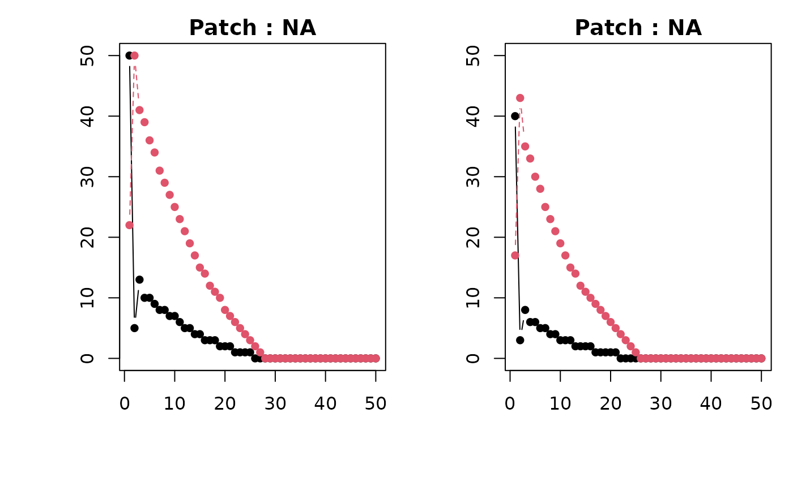

Produces plots of deterministic future population sizes of stages s in patches p. Depending on structure of `n`, plot frames represent patches or stages and lines the opposite.
Arguments
- projections
A `matrix` with `nrow` n_stages × n_patches and `ncol` of n_timesteps (see `spmm.project` for more detail). If prerequisite steps, i.e., `vec.perm`, `blk.diag`, `spmm.project.matrix`, and `spmm.project`, have been specified correctly and correspond to structure of `n` (and expectations).
- ylabs
Y-axis label for plots.
- xlabs
X-axis label for plots.
- stage_names
Names of stages, ages, classes, etc.
- patch_names
Names of patches, units, pools, etc.
Note
As with `spmm.project` ensure that the structural type of population vector `n` and projection matrix `A` are the same. Otherwise, projections may produce incorrect values!
References
Becker, R. A., Chambers, J. M. and Wilks, A. R. (1988). The New S Language. Wadsworth & Brooks/Cole.
Wootton, J.T., and Bell, D.A. (1992). A metapopulation model of the peregrine falcon in California: viability and management strategies. Ecological Applications 2:307--321.
Lebreton, J. D. (1996). Demographic models for subdivided populations: the renewal equation approach. Theoretical Population Biology 49:291--313.
Caswell, H. (2001). Matrix Population Models: Construction, analysis, and interpretation (2nd ed.). Sinauer Associates.
Morris, W. F., and Doak, D. F. (2003). Quantitative Conservation Biology: Theory and practice of population viability analysis. Sinauer Associates.
Hunter, C. M. and Caswell, H. (2005). The use of vec-permutation matrix in spatial matrix population models. Ecological Modelling 188:15--21.
Examples
# Peregrine falcon example from Hunter and Caswell (2005), Ecological Modelling
# 188(2005):15--21. Data from Wootton and Bell (1992). Continues example from
# `spmm.project`.
# Define the number of patches and stages
n_patches <- 2 # northern = 1x; southern = 2x
n_stages <- 2 # juvenile = x1; adult = x2
group_by <- "patches"
# Construct vec-permutation matrix
P <- vec.perm(n_stages, n_patches, group_by)
# Demographic parameter values
# Northern
f11 <- 0.00 # only adults reproduce
f12 <- 0.26
s11 <- 0.72
s12 <- 0.77
# Southern
f21 <- 0.00
f22 <- 0.19
s21 <- 0.72
s22 <- 0.77
# Demography matrices for patches
B1x <-
matrix(c(f11, f12, s11, s12),
nrow = 2,
byrow = TRUE)
B2x <-
matrix(c(f21, f22, s21, s22),
nrow = 2,
byrow = TRUE)
# Demography block matrix construction
BB <- blk.diag(list(B1x, B2x))
# Movement parameter values
dx1 <- 0.27 # only juveniles disperse
dx2 <- 1 - dx1
# Movement matrices for stages
Mx1 <- matrix(c(dx2, dx1, dx1, dx2), nrow = n_patches, byrow = TRUE)
Mx2 <- diag(x = 1, nrow = n_patches, ncol = n_patches) # no movement by adults
# Movement block matrix construction
MM <- blk.diag(list(Mx1, Mx2))
# Arrangement by patches
group_by <- "patches"
# Assumed movement before demography
lh_order <- "move"
# Projection matrix construction
A <- spmm.project.matrix(P, BB, MM, group_by, lh_order) # BB %*% t(P) %*% MM %*% P
# Initial stages within patches (patch group_by)
n <- c(
50, 22, # Northern patch adults and juveniles
40, 17 # Southern patch adults and juveniles
)
comment(n) <- "patches" # vec comment attr for group_by
# Number of time steps to project into the future
n_timesteps <- 50
# Project spatial matrix population model
projs <- spmm.project(n, A, n_timesteps, n_stages, n_patches)
#> Error in spmm.project(n, A, n_timesteps, n_stages, n_patches) :
#> object 'group_by' not found
#> [1] "Deterministic spatial matrix model projections for patches structured population vector and movement then demography A projection matrix."
# Plot projections
spmm.plot(projs)
